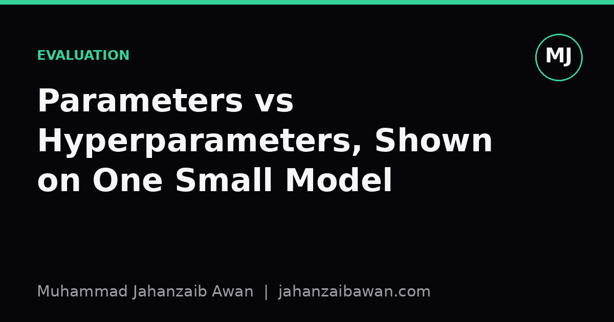

Parameters vs Hyperparameters, Shown on One Small Model
A tiny linear regression makes the distinction concrete: one set of numbers the model learns, another set you choose before training even starts.

Why this distinction keeps causing confusion
I still see the terms parameter and hyperparameter used interchangeably, usually by people who are otherwise careful. It matters because the two live in completely different parts of the workflow. A parameter is a number the model learns from data during training. A hyperparameter is a number you, the practitioner, choose before training starts, and that choice controls how the learning happens. Conflating them leads to a specific and common mistake: tuning something on the test set that should never have touched it, because the person doing the tuning did not notice that a hyperparameter search is itself a form of fitting.
The cleanest way I know to make this stick is to strip the problem down to the smallest model where both concepts exist at once and nothing else is competing for attention. Deep networks have millions of parameters and dozens of hyperparameters, which is exactly why they are a bad teaching example. A one-variable linear regression, by contrast, has exactly two parameters and, once you add regularisation, exactly one hyperparameter. You can hold the whole thing in your head.
A one-line model, built by hand
Suppose I am predicting house price from floor area using a simple line: price equals slope times area, plus intercept. The slope and the intercept are the parameters. Before I see any data I do not know their values; training is the process of searching for the slope and intercept that make the line fit my observed houses as closely as possible, typically by minimising squared error.
Say I have ten houses. After running ordinary least squares, the fitting procedure returns a slope of 1,850 and an intercept of 42,000. Those two numbers, 1,850 and 42,000, are the learned parameters. They were not chosen by me; they fell out of an optimisation process applied to the training data. If I added an eleventh house to the dataset and refit, those numbers would change. That sensitivity to the data is the signature of a parameter.
Now add a complication. Suppose floor area alone is noisy, so I add nine more features: number of bedrooms, age of the property, distance to the nearest station, and so on. With eleven features and only ten houses, ordinary least squares can overfit badly, essentially memorising noise. The standard fix is ridge regression, which penalises large coefficients by adding a term, lambda times the sum of squared coefficients, to the loss function being minimised. Lambda is the knob that controls how hard that penalty bites.
Lambda is a hyperparameter. I do not learn it from the training data the way I learn the slope and intercept; I set it before training, and the value I choose changes what the training process is even trying to do. Set lambda to zero and I am back to plain least squares, likely overfitting. Set lambda very large and every coefficient gets squashed towards zero, giving an underfit, nearly flat model. Somewhere in between is a value that generalises well, and finding that value is a search I run myself, outside the normal training loop.
Where people go wrong in practice
The failure mode I see most often is choosing lambda by checking which value gives the lowest error on the test set, then reporting that same test error as the final performance number. This is leakage in a subtle disguise. The test set was supposed to be an untouched estimate of how the model performs on unseen data, but by using it to pick lambda, I have let information from the test set influence a decision that shapes the final model. The reported error is now optimistic, sometimes by a meaningful margin, and the gap only shows up once the model meets genuinely new data.
The fix is a three-way split, or cross-validation within the training portion. I split the data into training, validation, and test sets. I fit parameters, the slope and intercept, on the training set for several candidate values of lambda. I check which lambda gives the best validation error, that is the hyperparameter search. Only once lambda is fixed do I touch the test set, exactly once, to get an honest final number. With ten houses this three-way split is obviously painful since each slice becomes tiny, which is precisely why k-fold cross-validation exists: it lets the limited data serve double duty for parameter fitting and hyperparameter selection without ever letting the final test fold leak into either.
It is worth noticing that the line between the two categories is defined by the training algorithm, not by some inherent property of the number. In plain linear regression there is no lambda at all, so there is nothing to tune beyond picking which features to include, which is itself a kind of hyperparameter decision made by a human. Add ridge regression and lambda appears. Switch to a decision tree and you gain hyperparameters like maximum depth or minimum samples per leaf, while the parameters become the split thresholds chosen at each node. The specific numbers change with the model family, but the division of labour does not: the training procedure searches for parameters automatically, the practitioner searches for hyperparameters deliberately.
The practical takeaway
Before reporting any result, I now ask myself one question for every number that appears in my pipeline: did the training algorithm produce this by minimising a loss function, or did I set this by hand, or by searching over a validation set? If it is the former, it is a parameter, and it belongs inside the model, refit automatically whenever the data changes. If it is the latter, it is a hyperparameter, and it demands its own held-out slice of data to be chosen honestly.
This small linear regression example generalises further than its size suggests. Learning rate, number of training epochs, batch size, the choice of regularisation strength, the number of trees in a forest: all hyperparameters, all requiring a validation step separate from final testing. Weights in a neural network, split points in a tree, coefficients in a regression: all parameters, all produced automatically by the fitting procedure. Keep that boundary explicit in your own head and in your write-ups, and a good fraction of the leakage mistakes I see in evaluation simply stop happening.